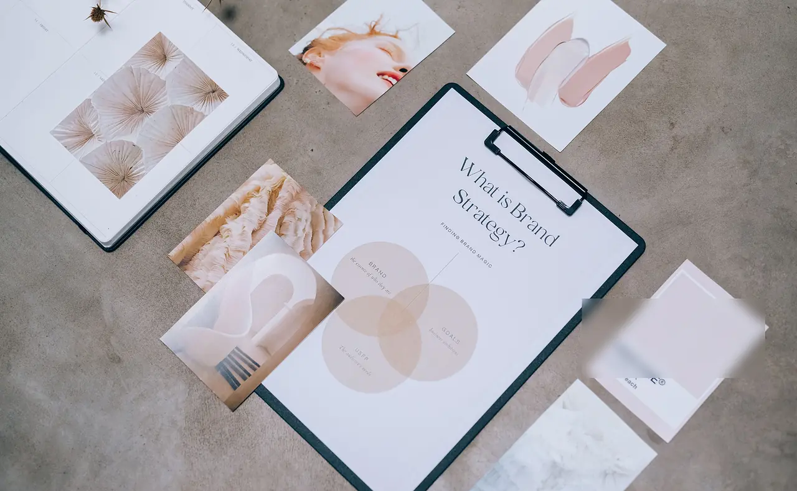
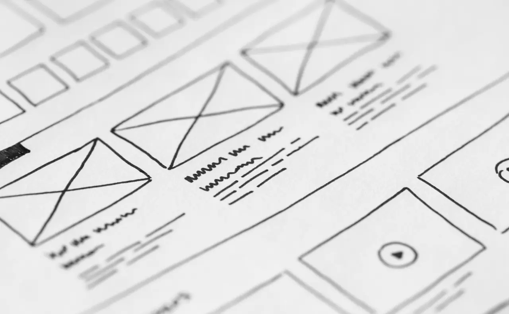

Website
Brief thiết kế website: doanh nghiệp cần chuẩn bị gì trước khi thuê làm web
Một bản brief tốt giúp báo giá sát hơn, ít vòng sửa hơn và website ra đúng thứ doanh nghiệp cần. Bài này giải thích từng mục của brief thiết kế website, cách viết sao cho bên thiết kế hiểu đúng, kèm mẫu brief dạng bảng bạn có thể sao chép và điền ngay.

Brief thiết kế website là bản tóm tắt yêu cầu doanh nghiệp gửi cho bên thiết kế trước khi báo giá: website để làm gì, cho ai xem, gồm những trang nào, nội dung và hình ảnh có sẵn đến đâu, phong cách thương hiệu, ngân sách, thời hạn và ai là người duyệt. Viết một bản brief đủ mười mục này mất khoảng một buổi, nhưng giúp báo giá sát hơn và cắt bớt nhiều vòng sửa về sau.
Bài này đi qua từng mục của brief, giải thích vì sao bên thiết kế cần biết, cách viết cho đúng, và cuối bài có mẫu brief dạng bảng để bạn sao chép, điền rồi gửi đi. Nếu bạn chưa chắc website cần những trang gì, hãy đọc trước bài website doanh nghiệp cần những trang gì.
Vì sao cần brief trước khi thuê làm website
Hai doanh nghiệp cùng nói "tôi cần website giới thiệu công ty" có thể cần hai thứ khác hẳn nhau: một bên chỉ cần 5 trang để khách kiểm tra uy tín, bên kia cần catalog hàng trăm sản phẩm, đa ngôn ngữ và form báo giá. Không có brief, bên thiết kế phải đoán, và báo giá dựa trên phỏng đoán thì hoặc thiếu, hoặc thừa.
Một bản brief rõ ràng mang lại ba lợi ích cụ thể:
- So sánh báo giá công bằng. Gửi cùng một brief cho các đơn vị, bạn so được phạm vi công việc tương đương, thay vì so gói 5 trang với gói 15 trang. Bài báo giá thiết kế website nói kỹ cách đọc báo giá.
- Ít vòng sửa. Phần lớn việc sửa đi sửa lại đến từ yêu cầu không được nói ra từ đầu, như "website phải có tiếng Anh" hay "phải đặt lịch được".
- Đúng hạn hơn. Thời gian dự án thường bị kéo dài vì chờ nội dung, ảnh và người duyệt; brief buộc bạn chuẩn bị những thứ đó sớm. Xem thêm bài thiết kế website mất bao lâu.
1. Mục tiêu website: một hành động chính
Đây là mục quan trọng nhất và cũng hay bị viết chung chung nhất. "Website đẹp, chuyên nghiệp" không phải mục tiêu. Hãy trả lời: khách vào website xong, bạn muốn họ làm gì?
- Nhắn Zalo hoặc gọi điện để được tư vấn.
- Đặt lịch hẹn (spa, nha khoa, showroom).
- Gửi form yêu cầu báo giá (sản xuất, xây dựng, B2B).
- Mua hàng và thanh toán trực tuyến.
- Tải hồ sơ năng lực, catalog.
Chọn một hành động chính và tối đa hai hành động phụ. Nếu được, ghi thêm con số bạn sẽ theo dõi, ví dụ số lượt nhắn Zalo hoặc số form gửi về mỗi tháng. Bên thiết kế sẽ đặt nút, bố cục và nội dung xoay quanh hành động đó.
2. Khách hàng mục tiêu
Mô tả người sẽ xem website càng cụ thể càng tốt: họ là ai, ở đâu, xem bằng điện thoại hay máy tính, họ đang lo lắng điều gì khi tìm đến bạn. Ví dụ: "chủ nhà 30–45 tuổi ở TP.HCM, xem trên điện thoại buổi tối, muốn biết giá thi công nội thất trọn gói và xem công trình thật" hữu ích hơn nhiều so với "khách hàng có nhu cầu nội thất".
Nếu bán cho doanh nghiệp, ghi rõ ai là người tìm hiểu (nhân viên mua hàng) và ai là người quyết định (giám đốc), vì hai người này cần thông tin khác nhau. Phần này cũng quyết định nhiều về trải nghiệm người dùng, được phân tích kỹ trong bài thiết kế UX/UI website doanh nghiệp.
3. Sơ đồ trang dự kiến
Không cần vẽ đẹp, một danh sách gạch đầu dòng là đủ. Ghi rõ trang nào bắt buộc có ngay, trang nào có thể làm sau:
- Trang chủ
- Giới thiệu (câu chuyện, đội ngũ, nhà xưởng)
- Dịch vụ hoặc sản phẩm (mấy nhóm, mỗi nhóm mấy mục)
- Dự án hoặc khách hàng tiêu biểu
- Bảng giá hoặc yêu cầu báo giá
- Tin tức, blog
- Liên hệ
Số trang ảnh hưởng trực tiếp tới báo giá. Hãy ghi số lượng ước tính cho phần lặp lại, ví dụ "khoảng 40 sản phẩm, 6 danh mục" hay "12 dự án đã làm", để bên thiết kế biết cần trang mẫu hay cần hệ thống quản trị nội dung.

4. Nội dung và hình ảnh
Hãy thành thật về tình trạng nội dung, vì đây là nguyên nhân chậm dự án phổ biến nhất. Ghi rõ từng loại:
- Chữ: đã có sẵn, có bản nháp, hay cần bên thiết kế viết giúp?
- Ảnh: có ảnh thật của sản phẩm, cửa hàng, đội ngũ chưa? Ảnh tự chụp bằng điện thoại đời mới đủ sáng vẫn tốt hơn ảnh mạng. Có cần thuê chụp không?
- Video, tài liệu: video giới thiệu, hồ sơ năng lực, chứng nhận, giấy phép.
- Ngôn ngữ: chỉ tiếng Việt, hay cần thêm tiếng Anh, tiếng Trung? Ai dịch?
Nếu cần bên thiết kế viết nội dung, ghi điều đó vào brief để được tính vào báo giá ngay từ đầu, thay vì phát sinh giữa dự án.
5. Website tham khảo: thích gì, vì sao
Gửi 3–5 website bạn thích, và quan trọng hơn, ghi lý do thích: bố cục thoáng, màu trầm sang, ảnh lớn, cách viết ngắn gọn hay hiệu ứng chuyển cảnh. Một đường link không kèm lý do khiến bên thiết kế phải đoán bạn thích phần nào. Nên gửi thêm 1–2 website bạn không thích, cũng kèm lý do; điều này thường giúp hiểu gu nhanh hơn.
Website của đối thủ cũng đáng đưa vào, không phải để sao chép, mà để bên thiết kế biết khách của bạn đang so sánh bạn với ai. Bạn có thể tham khảo thêm các mẫu website demo của Dream Labs như mẫu website nước hoa để chỉ ra phong cách mình muốn.
6. Thương hiệu: logo, màu, font, giọng nói
Gửi logo dạng file gốc (AI, SVG hoặc PNG nền trong), mã màu chủ đạo, font đang dùng trên tài liệu in nếu có. Nếu doanh nghiệp đã có bộ nhận diện thương hiệu, gửi kèm cả bộ. Ngoài phần hình, hãy mô tả giọng nói của thương hiệu bằng vài tính từ: trang trọng hay thân thiện, kỹ thuật hay gần gũi, sang trọng hay năng động.
Nếu chưa có logo hoặc logo cũ cần làm lại, ghi rõ trong brief, vì việc này nên làm trước hoặc song song với website.
7. Tính năng cần có
Liệt kê tính năng theo hai cột "bắt buộc" và "có thì tốt". Một số tính năng hay gặp:
- Nút Zalo, gọi điện, form liên hệ gửi về email.
- Tự sửa nội dung, đăng bài viết (CMS).
- Đặt lịch hẹn, chọn chi nhánh.
- Giỏ hàng, thanh toán trực tuyến, quản lý đơn.
- Đa ngôn ngữ.
- Kết nối CRM, Google Sheets, phần mềm bán hàng.
- Trợ lý trả lời khách tự động.
Tính năng là phần làm chênh báo giá nhiều nhất, nên tách rõ thứ cần ngay và thứ để giai đoạn sau. Nếu cần nhiều ngôn ngữ, ghi rõ ngôn ngữ nào và ai cung cấp bản dịch.
8. Ngân sách và 9. Thời hạn
Nhiều chủ doanh nghiệp ngại ghi ngân sách vì sợ bị "báo giá chạm trần". Thực tế, một khoảng ngân sách giúp bên thiết kế đề xuất phương án vừa túi tiền thay vì đưa ra một phương án lý tưởng mà bạn không dùng được. Ghi một khoảng (từ bao nhiêu đến bao nhiêu) là đủ, kèm việc bạn có dự trù cho chi phí duy trì hằng năm hay chưa.
Về thời hạn, hãy ghi ngày cần ra mắt và lý do: khai trương, hội chợ, mùa cao điểm, chiến dịch quảng cáo. Lý do giúp hai bên biết hạn nào cứng, hạn nào linh hoạt, và lên lịch chuẩn bị nội dung ngược từ ngày đó.
10. Người phụ trách và người duyệt
Ghi tên một người liên lạc chính và một người có quyền duyệt cuối cùng (có thể là cùng một người). Thống nhất rằng mọi góp ý sẽ được gom lại và gửi một lần sau mỗi vòng, không gửi lẻ từ nhiều người. Ghi luôn thông tin tên miền, hosting hiện có hoặc tên miền muốn đăng ký; nếu chưa có, đọc trước bài cách chọn tên miền, hosting, email cho doanh nghiệp.
Mẫu brief thiết kế website dùng ngay
Sao chép bảng dưới vào Word, Google Docs hoặc ghi chú điện thoại, điền cột bên phải. Ô nào chưa biết, ghi "chưa rõ"; đó cũng là thông tin có ích cho bên thiết kế.
| Mục | Câu hỏi cần trả lời | Thông tin của bạn |
|---|---|---|
| Thông tin chung | Tên doanh nghiệp, ngành, website hiện tại (nếu có), người liên hệ | |
| Mục tiêu | Khách vào website xong cần làm gì? Hành động chính, hành động phụ, con số muốn theo dõi | |
| Khách hàng mục tiêu | Họ là ai, ở đâu, dùng thiết bị gì, quan tâm điều gì nhất | |
| Sản phẩm, dịch vụ | Mấy nhóm, mấy mục; điểm khác biệt so với đối thủ | |
| Sơ đồ trang | Danh sách trang, trang bắt buộc, trang làm sau, số lượng mục lặp lại | |
| Nội dung | Chữ có sẵn hay cần viết; ảnh thật, video, tài liệu; ngôn ngữ | |
| Website tham khảo | 3–5 website thích và lý do; 1–2 website không thích; đối thủ | |
| Thương hiệu | Logo file gốc, màu, font, bộ nhận diện; giọng nói thương hiệu | |
| Tính năng | Bắt buộc / có thì tốt / để giai đoạn sau | |
| Kỹ thuật | Tên miền, hosting, email hiện có; ai đứng tên; tự cập nhật nội dung không | |
| Ngân sách | Khoảng ngân sách làm website; dự trù chi phí duy trì | |
| Thời hạn | Ngày cần ra mắt và lý do; hạn cứng hay linh hoạt | |
| Người duyệt | Người liên lạc chính, người duyệt cuối, cách gom góp ý |
Ví dụ minh họa: brief của một phòng khám nha khoa
Tình huống giả định, không phải khách hàng thật. Một phòng khám nha khoa ở Hà Nội viết brief ngắn như sau:
- Mục tiêu: khách đặt lịch khám qua website; hành động phụ là nhắn Zalo hỏi giá. Theo dõi số lịch đặt mỗi tháng.
- Khách hàng: người đi làm 25–45 tuổi gần phòng khám, xem bằng điện thoại, lo về chi phí và cảm giác đau.
- Trang: trang chủ, giới thiệu bác sĩ, 6 dịch vụ (niềng răng, implant, bọc sứ…), bảng giá, kiến thức răng miệng, đặt lịch, liên hệ.
- Nội dung: có ảnh phòng khám và bác sĩ; mô tả dịch vụ mới có bản nháp, cần viết lại chuẩn SEO.
- Thương hiệu: có logo file AI, màu xanh ngọc; giọng nói nhẹ nhàng, rõ ràng, không hù dọa.
- Tính năng: bắt buộc đặt lịch chọn giờ; có thì tốt là nhắc lịch qua Zalo.
- Thời hạn: ra mắt trước đợt khai trương chi nhánh mới; hạn cứng.
- Người duyệt: quản lý phòng khám gom góp ý, giám đốc chuyên môn duyệt nội dung y khoa.
Với brief này, bên thiết kế đã đủ thông tin để đề xuất gói, lịch làm và danh sách việc phòng khám cần chuẩn bị. Bạn có thể xem cách một website ngành này được tổ chức ở trang thiết kế website nha khoa.
Sai lầm thường gặp khi viết brief
- Mục tiêu chung chung như "đẹp, sang, chuyên nghiệp" mà không nói khách cần làm gì trên website.
- Gửi link tham khảo không kèm lý do, khiến bên thiết kế đoán sai phần bạn thích.
- Giấu ngân sách, nhận về các phương án quá xa nhau và mất thời gian so sánh.
- Hứa có nội dung nhưng chưa ai được giao viết, dự án dừng chờ chữ và ảnh nhiều tuần.
- Quên tính năng "hiển nhiên" như tiếng Anh, đặt lịch, thanh toán, rồi bổ sung khi đã thiết kế xong.
- Nhiều người cùng góp ý lẻ tẻ, ý kiến mâu thuẫn, không ai có quyền chốt.
- Sao chép nguyên website đối thủ thay vì nêu điều mình muốn làm khác và tốt hơn.
Checklist trước khi gửi brief
- Đã viết được một câu mô tả hành động chính của khách trên website.
- Đã mô tả khách hàng mục tiêu bằng tuổi, nơi ở, thiết bị và nỗi lo.
- Đã có danh sách trang, đánh dấu trang bắt buộc.
- Đã ghi rõ tình trạng chữ, ảnh, video và ai phụ trách chuẩn bị.
- Đã chọn 3–5 website tham khảo, mỗi cái có một dòng lý do.
- Đã gom logo file gốc, màu, font vào một thư mục.
- Đã chia tính năng thành bắt buộc và có thì tốt.
- Đã ghi khoảng ngân sách, ngày ra mắt và lý do.
- Đã chỉ định người liên lạc và người duyệt cuối.
Từ brief đến website tại Dream Labs
Ở Dream Labs, bản brief là điểm bắt đầu của buổi trao đổi đầu tiên. Bạn có thể gửi brief đầy đủ theo mẫu trên hoặc chỉ vài dòng; chúng tôi hỏi lại các điểm còn thiếu, đề xuất sơ đồ trang và chọn gói phù hợp. Gói Cơ bản 8.000.000đ gồm 5 trang theo mẫu tinh chỉnh, làm trong 7–10 ngày. Gói Chuyên nghiệp 18.000.000đ thiết kế riêng đến 10 trang, có CMS và viết nội dung chuẩn SEO, làm trong 14–21 ngày. Gói Cao cấp Liên hệ không giới hạn trang, hỗ trợ đa ngôn ngữ, thanh toán, CRM và trợ lý AI, làm trong 30–45 ngày.
| Gói | Giá | Thời gian | Bao gồm |
|---|---|---|---|
| Cơ bản | 8.000.000đ | 7–10 ngày4 vòng sửa | Có mặt chuyên nghiệp trên Google và điện thoại trong khoảng 10 ngày, khách tìm thấy và liên hệ được ngay.
|
| Chuyên nghiệpPhổ biến nhất | 18.000.000đ | 14–21 ngày9 vòng sửa | Website riêng đúng tầm thương hiệu, tự đăng bài để có khách từ Google lâu dài, không phụ thuộc người làm.
|
| Cao cấp | Liên hệ | 30–45 ngàyKhông giới hạn trong phạm vi | Trải nghiệm đủ khác biệt để định vị cao cấp, bán hàng và tiếp khách trực tuyến, phục vụ cả khách nước ngoài.
|
Xem chi tiết tại trang dịch vụ thiết kế website và bảng giá. Gửi brief hoặc hỏi nhanh qua Zalo 0934 246 420.
Câu hỏi thường gặp
Brief website là gì?
Brief website là tài liệu tóm tắt yêu cầu của doanh nghiệp gửi cho bên thiết kế: mục tiêu, khách hàng mục tiêu, sơ đồ trang, nội dung, thương hiệu, tính năng, ngân sách, thời hạn và người duyệt. Đây là căn cứ để báo giá và lên kế hoạch dự án.
Brief website nên dài bao nhiêu?
Một đến ba trang là đủ cho đa số website doanh nghiệp. Quan trọng là trả lời rõ các câu hỏi chính, không cần văn phong trau chuốt. Gạch đầu dòng dễ đọc hơn đoạn văn dài.
Chưa biết website cần những trang gì thì viết brief thế nào?
Ghi mục tiêu và khách hàng mục tiêu thật rõ, phần sơ đồ trang có thể ghi "cần tư vấn". Bên thiết kế có kinh nghiệm sẽ đề xuất sơ đồ dựa trên mục tiêu và ngành của bạn.
Có nên ghi ngân sách vào brief không?
Nên ghi một khoảng. Ngân sách giúp bên thiết kế đề xuất phương án vừa sức, chỉ ra phần nào nên làm ngay, phần nào để sau, thay vì đưa ra phương án quá lớn hoặc quá sơ sài.
Brief khác hợp đồng thiết kế website thế nào?
Brief nêu nhu cầu của doanh nghiệp. Sau khi trao đổi, phạm vi công việc chốt lại sẽ được ghi vào báo giá và hợp đồng, gồm số trang, tính năng, số vòng chỉnh sửa, thời hạn và điều khoản bàn giao.
Ai trong doanh nghiệp nên viết brief?
Người hiểu khách hàng và mục tiêu kinh doanh nhất, thường là chủ doanh nghiệp hoặc trưởng bộ phận kinh doanh, marketing. Người viết brief cũng nên là người liên lạc chính trong suốt dự án.
Nguồn ảnh: ảnh bìa: Leeloo The First / Pexels · ảnh 1: picjumbo.com / Pexels · ảnh 2: Polina Zimmerman / Pexels · ảnh 3: Ketut Subiyanto / Pexels. Ảnh dùng theo giấy phép miễn phí của Pexels, chỉ mang tính minh họa.
Bắt đầu cùng Dream Labs
Muốn có người cùng hoàn thiện brief website?
Gửi Dream Labs bản brief dù mới viết vài dòng qua Zalo. Chúng tôi hỏi lại những điểm còn thiếu, gợi ý sơ đồ trang và gói phù hợp, tư vấn miễn phí.